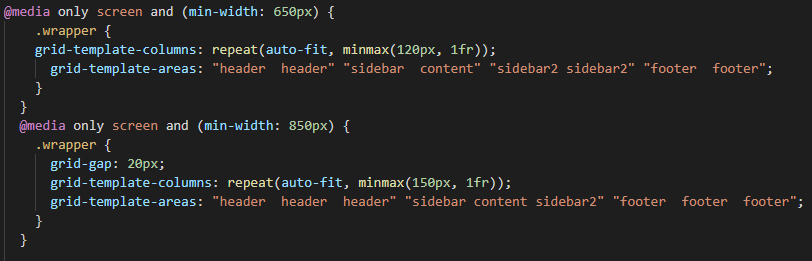

Tämä sivu on rakennettu
Grid-menetelmällä
Jokaiselle osiolle on oma laatikko (tai box).
Osiot on hyvin kustomoitavia, voit esimerkiksi muokata
osion leveyttä, korkeutta, etäisyyttä muihin osioihin,
väriä tai muotoa.
Grid-menetelmällä sivu saadaan responsiiviseksi käyttämällä
grid-template-areas ominaisuutta.

Tämän avulla voidaan määritellä kuinka ison tilan osio vie sivulta.
Sivulla ollaan myös käytetty semanttisia tageja, eli tageja,
joiden nimi on selvästi kuvattu. Tämän osion tagi on article,
eli artikkeli.
Muita tageja ovat details, header,
footer, main, jne.